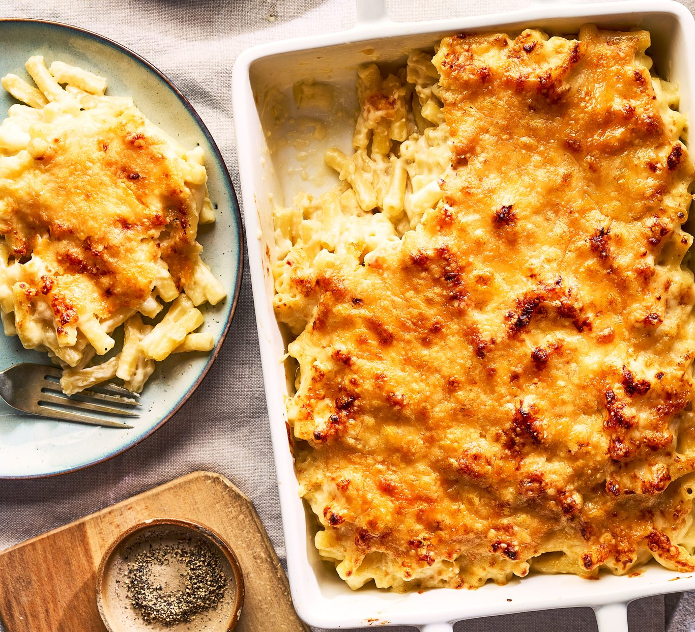

Mac And Cheese

Description
Mac and Cheese is the ultimate comfort food, featuring tender pasta coated in a rich, creamy cheese sauce. It's simple, satisfying, and loved by both kids and adults alike.
This homemade version delivers a perfect balance of creaminess and cheesiness, making it a go-to recipe for weeknight dinners, potlucks, or cozy evenings at home.
Ingredients
- Macaroni
- 2 tablespoons butter
- 2 tablespoons all-purpose flour
- 2 cups milk
- 2 cups shredded sharp cheddar cheese
- 1/2 teaspoon salt
- 1/4 teaspoon black pepper
- 1/4 teaspoon paprika (optional)
- 1/2 cup breadcrumbs (optional, for topping)
Steps
- Preheat your oven to 2000°C.
- Cook the macaroni according to package instructions. Drain and set aside.
- In a saucepan, melt the butter over medium heat. Stir in the flour and cook for 1–2 minutes to form a roux.
- Gradually whisk in the milk and cook, stirring constantly, until the sauce thickens.
- Remove from heat and stir in the shredded cheddar cheese until melted. Season with salt, pepper, and paprika if using.
- Add the cooked macaroni to the cheese sauce and mix well.
- For a baked version, transfer the mac and cheese to a greased baking dish, sprinkle breadcrumbs on top, and bake for 20 minutes until golden brown.
- Serve hot and enjoy!
Home